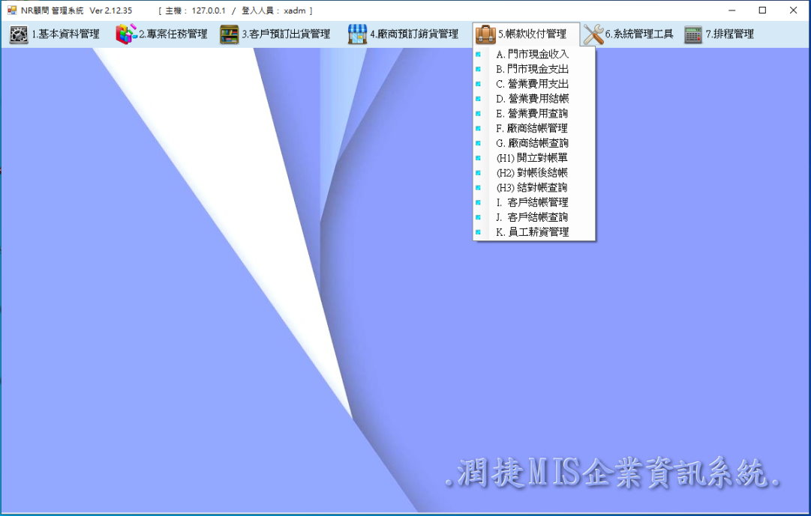
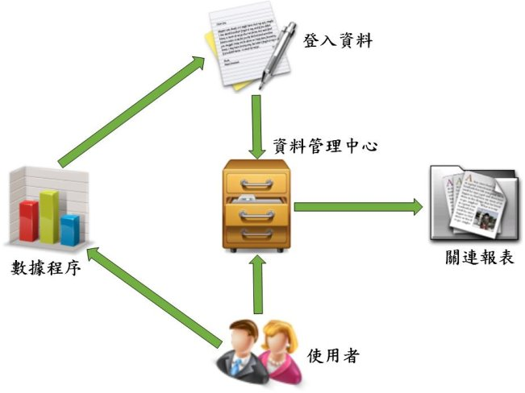

| ￭ 企業MIS系統簡介 ￭ | |
| 管理資訊系統（Management Information System，MIS）是一個以人為導向的，利用電腦硬體、 | |
| 軟體和網路裝置的資訊技術，對人員和業務流程，進行一系列的資訊收集、存儲和處理數據、傳遞 | |
| 、儲存、加工、整理的系統，生成決策者可用於日常決策的資訊。 | |
| MIS 的完整形式是管理資訊系統。MIS 的目的是從不同的來源中提取數據，並獲取推動業務增長 | |
| 的見解。以提高組織的經營效率。 | |
|  |
| [ 資訊關聯示意圖 ] | |
|  | |
| 系統操作管理權限設置 | ||
| 類別 | 職級員工 | 操作權限 |
| 管理人員 | 總經理周邊職管理職 | 系統完整管理權限 |
| 系統開發人員 | 系統規劃建置人員 | 系統完整建置權限 |
| 各部門營運級職 | 各部門營運主管 | 各部門管理權限 |
| 各部門管理級職 | 各部門管理幹部 | 各部門單位權限 |
| 各部門一般職員 | 各部門一般職員 | 單位一般權限 |
| 協力廠商 | 限制協定廠商 | 系統對應窗口權限 |
| 終端客戶 | 限定操作客戶 | 客戶單一操作視窗 |